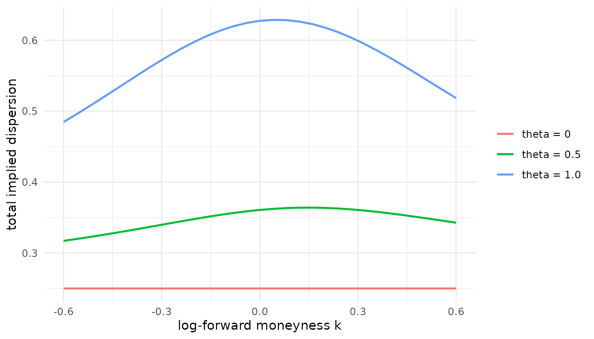

Event-spanning options: estimating the event exposure
Source:vignettes/eventclock-event-spanning.Rmd
eventclock-event-spanning.RmdTwo kinds of options around a scheduled event
An option that expires after a scheduled event is exposed to the realized outcome itself: its price depends on how the asset is distributed conditional on each outcome. An option that expires before resolution is exposed only to learning — revisions in the event probability while the option is alive. The working paper’s sequential design keeps these roles strictly separate:
- the traded event market supplies the state-price-implied event
probability
and, via the event clock, the information-flow input
(
q_from_price(),event_clock()); - event-spanning options identify the outcome-conditional asset distributions — this vignette;
- pre-resolution options and the underlying are held out and used as overidentifying restrictions, not as calibration instruments.
This vignette covers step 2: the lognormal event mixture, the event exposure the log ratio of the outcome-conditional risk-neutral means of the event multiplier, and how to estimate a common from a panel of event-spanning option surfaces.
The lognormal event mixture
Normalize the terminal asset value by its forward. Conditional on
outcome 1 (probability
)
the gross event multiplier is lognormal with conditional mean
and total dispersion
;
conditional on outcome 2 it is lognormal with mean
and dispersion
.
The pricing-measure adding-up (scale) normalization
fixes the level, so
fully parametrize the mixture. ec_mix_price() prices
forward-normalized European options; ec_mix_iv() converts
them into Black implied dispersions:
k <- seq(-0.6, 0.6, by = 0.04)
smile <- function(theta) ec_mix_iv(k, q = 0.35, theta = theta,
s1 = 0.25, s2 = 0.25)
dat <- data.frame(
k = rep(k, 3),
iv = c(smile(0), smile(0.5), smile(1.0)),
theta = factor(rep(c("theta = 0", "theta = 0.5", "theta = 1.0"),
each = length(k)))
)
library(ggplot2)
ggplot(dat, aes(k, iv, colour = theta)) +
geom_line(linewidth = 0.8) +
labs(x = "log-forward moneyness k", y = "total implied dispersion",
colour = NULL) +
theme_minimal()
With the mixture collapses to a single lognormal and the smile is flat. A nonzero exposure adds the two-point outcome spread on top of the conditional dispersions: the smile rises and, away from , becomes asymmetric. That asymmetry is exactly what the surface fit uses.
Two useful identities connect this family to the rest of the package:
-
to first order,
is the event beta. The returns-based exposure of
event_beta()estimates , and for small exposures : the two measurements are the same object seen from returns and from option smiles; - the event contributes of total log variance (exactly, when the conditional dispersions coincide) — the basis of the quick estimator below.
Delta grids
Standardized option surfaces are usually delivered on a
(call-equivalent) delta grid rather than in strikes.
ec_delta_to_k() maps the grid into log-forward moneyness,
node by node, using the node’s own total dispersion — so no forward
reconstruction is needed:
iv <- c(0.32, 0.29, 0.27, 0.26, 0.27) # annualized, 30 days to expiry
tau <- 30 / 365
node <- c(0.1, 0.3, 0.5, 0.7, 0.9)
ec_delta_to_k(node, s = iv * sqrt(tau))
#> [1] 0.12177923 0.04705504 0.00299589 -0.03631057 -0.09620465Put deltas enter as call-equivalent deltas, , so a standard OTM composite smile (calls below 0.5, puts above) becomes one monotone grid.
Estimating a common exposure from spanning surfaces
The working paper’s design gives every surface (one valuation date,
one event-spanning expiry) its own conditional dispersions, while the
exposure
is restricted to be common across all surfaces; the
objective is surface balanced, so each surface counts equally.
ec_theta_fit() implements exactly this. Here we simulate a
small clean panel with a known
and recover it:
k7 <- seq(-0.5, 0.5, length.out = 7)
cfg <- data.frame(
surface = c("oct25_nov15", "oct28_nov15", "nov01_nov22"),
q = c(0.40, 0.45, 0.42),
s1 = c(0.28, 0.27, 0.30),
s2 = c(0.35, 0.33, 0.38)
)
panel <- do.call(rbind, lapply(seq_len(nrow(cfg)), function(i) {
data.frame(
surface = cfg$surface[i], k = k7, q = cfg$q[i],
iv = ec_mix_iv(k7, cfg$q[i], theta = 0.8, cfg$s1[i], cfg$s2[i])
)
}))
fit <- ec_theta_fit(panel)
fit
#> -- Event-spanning mixture fit (3 surfaces, 21 nodes)
#> Common event exposure theta = 0.8000 (conditional-mean ratio m1/m2 = 2.226)
#> Surface-balanced RMSE = 0.0000 (IV units of the input)The per-surface table reports the fitted conditional dispersions and per-surface fit quality:
fit$surfaces
#> # A tibble: 3 × 7
#> surface q n theta s1 s2 rmse
#> <chr> <dbl> <int> <dbl> <dbl> <dbl> <dbl>
#> 1 oct25_nov15 0.4 7 0.800 0.280 0.350 0.00000176
#> 2 oct28_nov15 0.45 7 0.800 0.270 0.330 0.00000248
#> 3 nov01_nov22 0.42 7 0.800 0.300 0.380 0.00000156Supply annualized IVs together with a tau column (years
to expiry) to work in annualized units, and a w column (for
instance the number of quotes behind each node) to weight nodes within a
surface.
common = FALSE is the free-ratio diagnostic: every
surface picks its own
,
and the comparison with the common fit shows how much the cross-surface
restriction costs — in the working paper’s 2024 application the
deterioration is modest while the common ratio is stable across
maturities, which is what makes the exposure credible.
Sign identification. At
the mixture is observationally symmetric in
:
option prices alone cannot say which outcome the asset favors. When
is close to one half, fix the sign externally — the returns-based
event_beta() against the same event-probability series is
the natural source.
The quick estimator: the variance hump
Often an existing pipeline already computes a maturity hump
— how much higher the event-spanning expiry’s volatility is than its
neighbors’. Worked in total variance units (not
annualized volatilities), that hump is the event’s variance contribution
,
and ec_theta_hump() inverts it:
tau_b <- 35 / 365
iv_spanning <- 0.21 # event-spanning ATM, annualized
iv_baseline <- 0.15 # no-event baseline at the same maturity
dvar <- (iv_spanning^2 - iv_baseline^2) * tau_b
ec_theta_hump(dvar, q = 0.4)
#> [1] 0.09289853This is a first-order magnitude estimate — it needs no optimization
and no wing data, which makes it the natural first pass over a large
cross-section before running the full surface fit on the assets that
matter. It identifies
only; the sign again comes from event_beta().
Clock sensitivity: partial recovery
The spanning estimation uses only the level
.
As soon as the estimated exposure feeds a pre-resolution learning
exercise, the event clock enters, and the measured log-odds variation
identifies the physical clock only under the exact-recovery restriction.
The working paper’s sensitivity grid replaces the point clock with the
sharp partial-recovery interval, which ec_recovery_set()
tabulates:
ec_recovery_set(0.511) # the Brexit one-month clock
#> # A tibble: 4 × 4
#> A eps lower upper
#> <dbl> <dbl> <dbl> <dbl>
#> 1 0.511 0 0.511 0.511
#> 2 0.511 0.1 0.414 0.618
#> 3 0.511 0.25 0.287 0.798
#> 4 0.511 0.5 0.128 1.15At eps = 0 (exact recovery) the interval degenerates to
the measured value; wider bounds propagate economically motivated
uncertainty about state-dependent valuation into everything
downstream.
What this vignette did not do
The package deliberately ships no proprietary option
data: the estimation functions take your surfaces in the long
format shown above. The full sequential design — counterfactual shape
from post-resolution surfaces, held-out pre-resolution wing tests, and
dependence between ordinary asset news and event-probability innovations
— lives in the accompanying working paper (Hanke, Schadner, Stöckl, and
Weissensteiner, Working Paper, “Learning Before Scheduled Events:
Prediction Markets, State Prices, and Option Valuation”); the transition
machinery needed to price pre-resolution claims under learning is
already available via ec_transition_density(),
ec_simulate(), and the formula-book calculators
(ec_atm_event_call(), ec_iv_rule()).